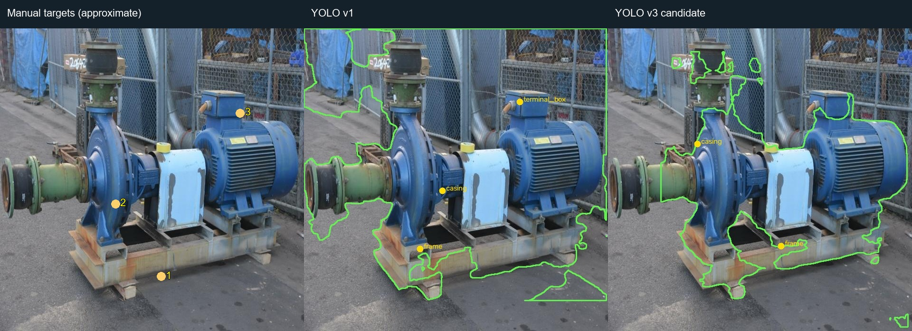
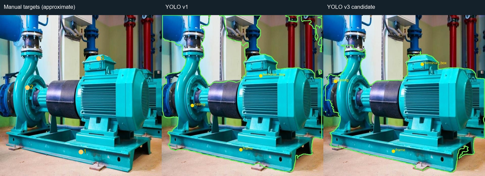
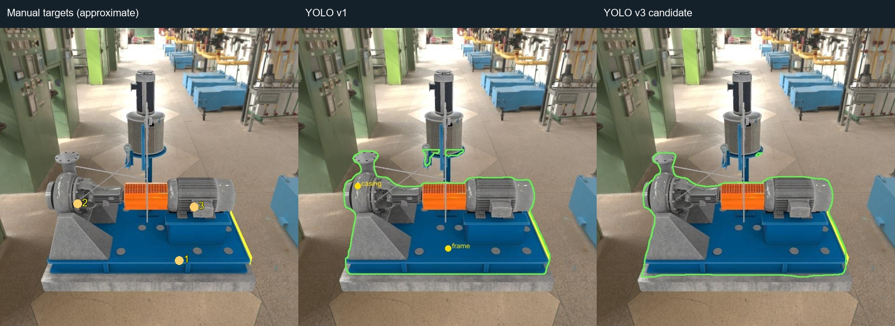
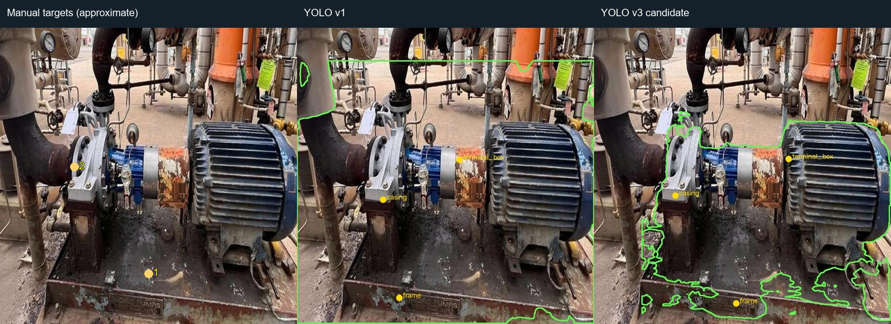
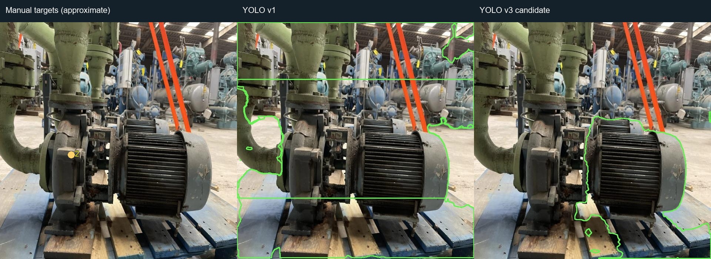

5 новых кадров. Ориентиры приблизительные; маски SAM не используются как эталон точности. 1 — рама; 2 — корпус; 3 — клеммная коробка. Источник: Roboflow kai industrial_equipment v1, заявлена CC BY 4.0.




